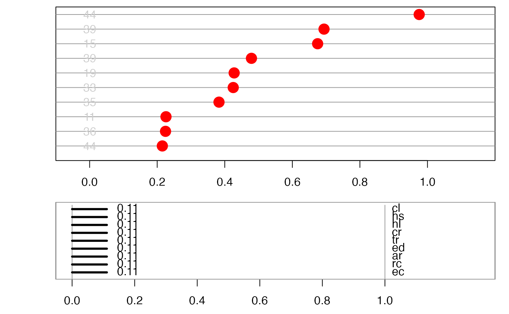

Animate a 1D tour path for data where individuals are ranked by a multivariate index. Allows one to examine the sensitivity of the ranking on the linear combination. Variables should be scaled to be between 0-1. This is only designed to work with a local tour, or a radial tour.
Usage
display_idx(
center = FALSE,
half_range = NULL,
abb_vars = TRUE,
col = "red",
cex = 3,
panel_height_ratio = c(3, 2),
label_x_pos = 0.7,
label = NULL,
label_cex = 1,
label_col = "grey80",
add_ref_line = TRUE,
axis_bar_col = "#000000",
axis_bar_lwd = 3,
axis_label_cex_upper = 1,
axis_label_cex_lower = 1,
axis_bar_label_cex = 1,
axis_bar_label_col = "#000000",
axis_var_cex = 1,
axis_var_col = "#000000",
palette = "Zissou 1",
...
)
animate_idx(data, tour_path = grand_tour(1), ...)Arguments
- center
should 1d projection be centered to have mean zero (default: TRUE). This pins the centre of distribution to the same place, and makes it easier to focus on the shape of the distribution.
- half_range
half range to use when calculating limits of projected. If not set, defaults to maximum distance from origin to each row of data.
- abb_vars
logical, whether to abbreviate the variable name, if long
- col
the color used for points, can be a vector or hexcolors or a factor, default to "red".
- cex
the size used for points, default to 0.5
- panel_height_ratio
input to the height argument in [graphics::layout()] for the height of data and axis panel.
- label_x_pos
the x position of text label, currently labels are positioned at a fixed x value for each observation
- label
the text label, a vector
- label_cex
the size for text labels
- label_col
the color for text labels
- add_ref_line
whether to add a horizontal reference line for each observation, logical default to TRUE
- axis_bar_col
the color of the axis bar
- axis_bar_lwd
the width of the axis bar
- axis_label_cex_upper
the size of the axis label in the upper panel
- axis_label_cex_lower
the size of the axis label in the lower panel
- axis_bar_label_cex
the size of the axis label
- axis_bar_label_col
the color of the axis label
- axis_var_cex
the size of the variable name to the right of the axis panel
- axis_var_col
the color of the variable name to the right of the axis panel
- palette
name of color palette for point colour, used by
hcl.colors, default "Zissou 1"- ...
ignored
- data
matrix, or data frame containing numeric columns
- tour_path
tour path generator, defaults to 2d grand tour
Examples
data(places)
places_01 <- apply(places[1:10,1:9], 2, function(x) (x-min(x))/(max(x)-min(x)))
b <- matrix(rep(1/sqrt(9), 9), ncol=1)
places_init <- cbind(places_01, idx = as.vector(as.matrix(places_01) %*% b))
places_sorted <- places_init[order(places_init[,10]), 1:9]
animate_idx(places_sorted, tour_path = local_tour(b, angle=pi/8),
label=as.character(places$stnum[1:9]),
label_x_pos = 0)
#> Using half_range 2.7
